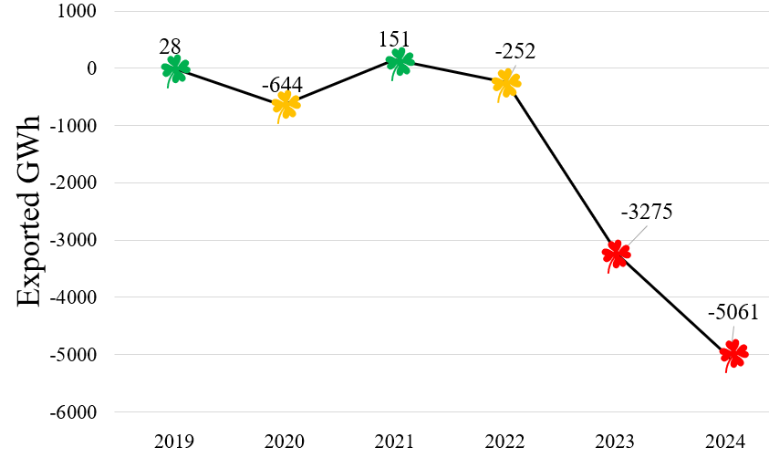

“The cost of AI will converge to the cost of energy.”
Sam Altman, CEO of OpenAI
AI systems, which simulate aspects of human intelligence, have immediate widespread economic benefits. But the datacenters required for their development, training, and use are increasing the economy's dependence on fossil energy. This tradeoff is currently only felt locally but we will all feel it if we do not act.
Ireland as a cautionary tale
Whether it is to use Google Maps, book an Airbnb, browse product recommendations on Amazon, or chat with an AI companion on Replika, we all rely to some extent on AI daily. The electricity used by datacenters in the background is not always top of mind. However, those living close to them, for example in Ireland, have started to see the influence of AI on their electricity bill lately. Ireland's climate targets are slipping out of reach as fossil energy is being purchased to keep up with a sudden rise in electricity needs due to the latest AI models1 (see Figure 1).

The AI villains: (big) models for business as usual
In late 2022, OpenAI consecrated in the eyes of the world the idea that bigger models, trained with more data and chips, are better. The hype around ChatGPT unlocked massive amounts of available funding for AI companies, thrusting us in an era of massive scale. Generative tools like ChatGPT are now pervasively used for practical guidance, information seeking and writing. This is useful to improve the efficiency of economic processes. More cutting edge uses include the “tiny team” phenomenon where extremely profitable and scalable companies are composed of a small team of founders that manage AI agents writing code and taking care of business development for them. This boom in big AI models that run on the cloud is aggressively pushed by cloud providers as it fuels market growth, and by nations as they connect this technology to national sovereignty. In short, we are in an era of scale.
The problem is that these big general-purpose models require orders of magnitude more energy (Luccioni et al., 2024). Moreover, energy optimization strategies paradoxically lead to more rather than less energy consumption (Morand et al., 2025). This is what is called a rebound effect, where efficiency gains are offset by increased usage, a phenomenon observed with other technologies such as light emitting diodes (LEDs). While AI providers are buyers of “power purchase agreements”, which are supposed to compensate the use of dirty energy, the Irish case shows us that overall, this is an imperfect solution to transition to an economy powered by green energy. This additional use of fossil fuels creates tradeoffs today at a local level, such as in Ireland, where electricity prices jumped. But this additional use also creates an intertemporal tradeoff which will be felt in the future by all of us if we do not successfully organize a global energy transition. Indeed, fossil fuel use generates greenhouse gas emissions, which over time disturb the balance of natural systems. Specifically, surpassing specific emission thresholds could trigger climate tipping points with concrete impacts such as sea level rise (Armstrong McKay et al., 2022), which will affect everyone, although perhaps more marginalized communities that have less resources to engage in climate adaptation and are more exposed.
In summary, big AI models are currently sabotaging the energy transition because of the datacenters required to run them, and size matters. So, what now? I will argue below that how we use AI models, and especially small AI models, matters if we want to reverse the trend.
The AI heroes: (small) models used for the energy transition
AI is often deployed in unsustainable ways. However, there is an optimistic narrative suggesting AI use for climate mitigation more than compensates for its energy consumption. One estimate considers AI could reduce global emissions by 3.2–5.4 GtCO2 annually by 2035 (Stern et al., 2025). The argument is that AI improves the efficiency and adoption of renewable energy systems in the power sector, the attractiveness and affordability of alternative proteins in the meat and dairy sector, and efficiency, as well as adoption of electric vehicles because of affordability and accessibility in the light road vehicles sector. As these are hard to abate sectors representing half of the world's emissions, it is plausible to expect big gains. In this context, smaller AI models are often used, such as decision trees or optimization algorithms to improve renewable energy production forecasting. It is worth noting however that although this is more rare, larger generative models may have some specific use cases too. For example, colleagues I met during a visiting period at the Digital+Sustainable Innovation Lab in Lisbon document the case of digital twins used to promote higher sustainability in cities by optimizing energy use in buildings (Rezazadeh et al., 2026).
What now? Collective action
My doctoral research in management (the science of collective action) relates to the environmental sustainability of business strategies leveraging AI. This journey has led me to publish on the topic with my supervisor at the SKEMA Center for AI (Pagani & Sorin, 2025). I also regularly interact with many firms through organizations such as Impact AI within the working group on AI and the environment and at events. Based on this experience, my understanding is that, at the moment, AI is deployed in large firms (the actual contributors to climate change) first and foremost to improve profitability within business-as-usual approaches. At times this may coincide with an improvement in energy efficiency. But in reality, this is not sufficient and truly innovative use cases are not pursued aggressively enough. We must make sure big AI models do not put the last nail in the coffin of the energy transition. To this end, firms must be incentivized by stronger policy and customer behavior to replace unsustainable deployment of big AI models with innovative deployment of smaller AI models. Such AI-enabled business models would align with the energy transition rather than condemn it.
In summary, for the sake of our planet and all its inhabitants, we must revisit AI's size and use.